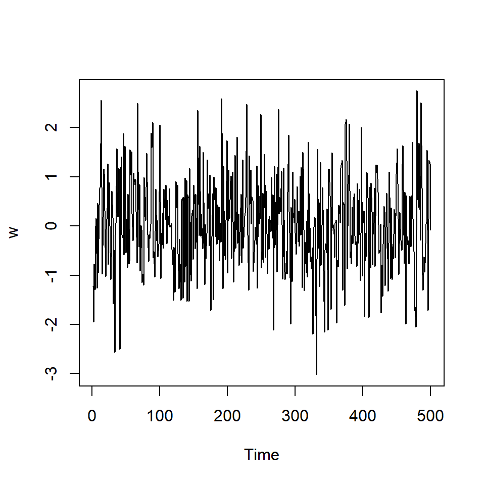
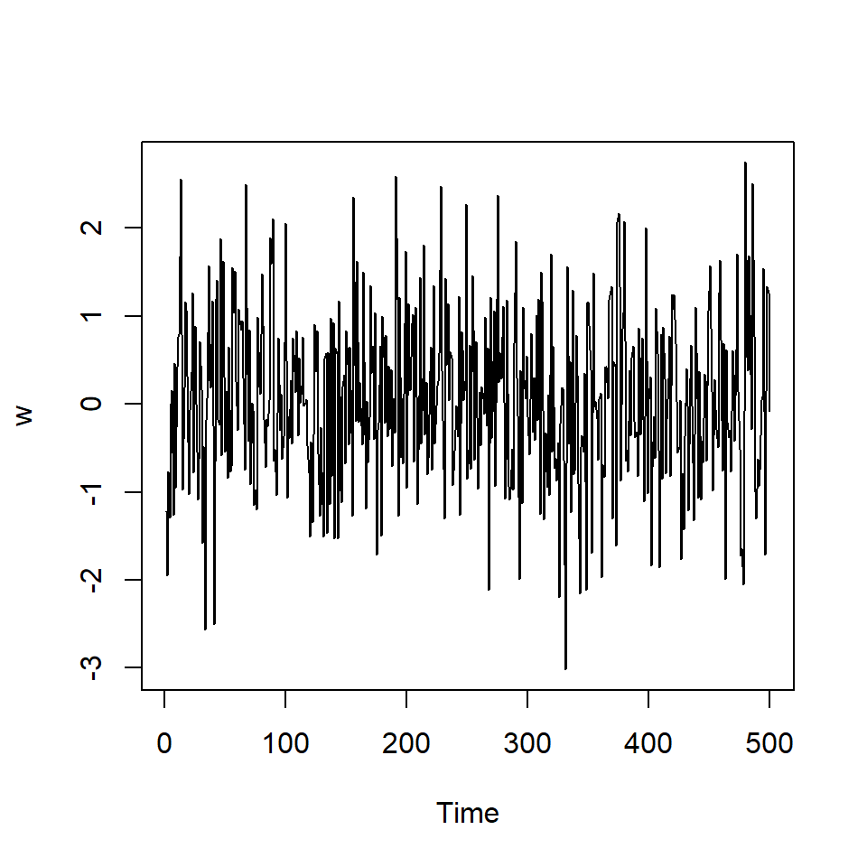
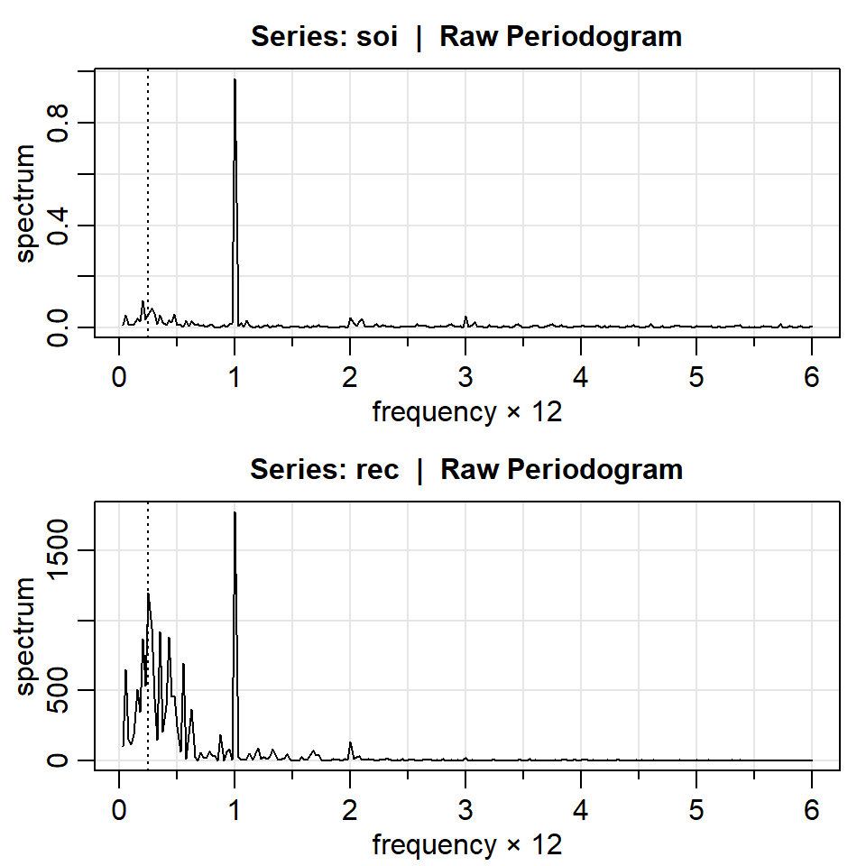

Curso: Tópicos Avanzados de Series Temporales
En la clase anterior vimos:
Es necesario entender los fundamentos teóricos de los conceptos de frecuencia (poblacional) antes de entrar al caso cuando se tiene series observadas (muestral).
Empezamos a definir la densidad espectral y su relación con un proceso estacionario.
Propiedad 1: Representación espectral de una función de autocovariancia
Si \(\left\lbrace x_t \right\rbrace\) es estacionario con función de autocovariancia \(\gamma(h)=Cov(x_{t+h},x_t)\), entonces existe una única función monótonamente creciente \(F(\omega)\), llamada función de distribución espectral, con - \(F(-\infty)=F(-1/2)=0\), y - \(F(\infty)=F(1/2)=\gamma(0)\)
tal que
\[\gamma(h)= \int_{-\frac{1}{2}}^{\frac{1}{2}} e^{2\pi i\omega h} dF(\omega)\]
Nota: Esta propiedad usa el concepto de integral de Riemann-Stieltjes (ver C.4, Shumway & Stoffer). Cuando la función de autocovariancia es absolutamente sumable, esa función de distribución espectral es absolutamente continua con \(dF(\omega)=f(\omega)d\omega\).
Propiedad 2: Densidad espectral
Si la función de autocovariancia \(\gamma(h)\), de un proceso estacionario satisface la condición \[\sum_{h=-\infty}^{\infty} |\gamma(h)|< \infty\] entonces tiene la representación \[\gamma(h)= \int_{-\frac{1}{2}}^{\frac{1}{2}} e^{2\pi i\omega h} f(\omega)d\omega,~~~ h=0,\pm 1,\pm 2,...\] y la transformación inversa de la densidad espectral \[f(\omega) = \sum_{h=-\infty}^{\infty} \gamma(h) e^{-2 \pi i \omega h}, ~~~~~~ -\frac{1}{2} \leq \omega \leq \frac{1}{2}\]
Algunas propiedades de la densidad espectral:
debido a que \(\gamma(h)\) es definida no negativa.
\(f(\omega)=f(-\omega)\)
\(\gamma(0)= Var(x_t) = \int_{-\frac{1}{2}}^{\frac{1}{2}} f(\omega)d\omega\)
Nota: - La función de autocovariancia y la función de distribución espectral contiene la misma información. - La FAC expresa la información en término de rezagos (tiempo), mientras que la distribución espectral expresa la misma información en término de ciclos (frecuencias).
Una colección de variables aleatorias no correlacionadas, \(w_t\), con media 0 y variancia \(\sigma_w^2\), denotado por \(w_t \sim wn(0,\sigma_w^2)\).
La FAC está dada por:
\[ \gamma_w(h)=\left\lbrace \begin{aligned} \sigma_w^2, & & h = 0 \\ 0, & & h \neq 0. \end{aligned} \right. \] - Su densidad espectral está dada por: \[f_w(\omega)=\sigma_w^2,\] para \(-1/2 \leq \omega \leq 1/2\).

Como un proceso lineal es una herramienta que engloba varios modelos de series estacionarias (ej: ARMA), es importante presentar los resultados teóricos correspondientes.
Un filtro lineal utiliza coeficientes \(a_j, j=0,\pm1,...\), para transformar una serie input \(x_t\) a una serie ouput \(y_t\):
\[y_t=\sum_{j=-\infty}^{\infty}a_j x_{t-j},~~~ \sum_{j=-\infty}^{\infty}|a_j| < \infty.\]
Propiedad: El espectro de una serie estacionaria filtrada
Si \(f_X(\omega)\) es la densidad espectral de \(x_t\), una serie estacionaria. Entonces, la densidad espectral \(f_Y(\omega)\) de la serie filtrada (output) está dada por: \[f_Y(\omega)=|A(\omega)|^2 f_X(\omega),\] donde \[A(\omega)=\sum_{j=-\infty}^{\infty} a_j e^{-2\pi i \omega j}\] es llamada la función respuesta de frecuencia.
Nota: \(A(\omega)\) es la transformada discreta de Fourier de \(a_j\).
Un proceso ARMA es un caso particular de un proceso lineal. Recuerde que un proceso ARMA(p,q) se define como:
\[x_t=\phi_1 x_{t-1}+\phi_2 x_{t-2}+...+\phi_p x_{t-p}\] \[+w_t-\theta_1 w_{t-1}-\theta_2 w_{t-2}-...-\theta_q w_{t-q}\]
Utilizando los operadores de rezagos, el ARMA(p,q) se puede escribir como
\[\phi(B)x_t=\theta(B)w_t,\] donde:
\(\phi(B)=1-\phi_1 B -\phi_2 B^2-...-\phi_p B^p\) es el operador autoregresivo.
\(\theta(B)=1-\theta_1 B-\theta_2 B^2-...-\theta_q B^q\) es el operador de medias móviles.
Un proceso ARMA(p,q) estacionario e invertible se puede escribir como:
\[x_t=\phi(B)^{-1}\theta(B)w_t,\]
Propiedad: La densidad espectral de un modelo ARMA
Si \(x_t\) es ARMA(p,q):
Su densidad espectral es dada por
\[f_X(\omega)=\sigma_w^2 \frac{|\theta(e^{-2 \pi i \omega})|^2}{|\phi(e^{-2 \pi i \omega})|^2}.\]
MA(1): - Considere \(X_t=w_t+0.5 w_{t-1}\). - El operador de medias móviles es \(\theta(B)=1+0.5 B\). - Entonces,
\[f_X(\omega)=\sigma_w^2 |\theta(e^{-2 \pi i \omega})|^2\] \[=\sigma_w^2 |1+0.5 e^{-2 \pi i \omega}|^2\] \[=\sigma_w^2 (1+0.5 e^{-2 \pi i \omega})(1+0.5 e^{2 \pi i \omega})\] \[=\sigma_w^2 \left[1.25 + 0.5 (e^{-2 \pi i \omega}+e^{2 \pi \omega})\right]\]
AR(2): - Considere \(X_t-X_{t-1}+0.9X_{t-2}=w_t\). - El operador autorregresivo es \(\phi(B)=1-B+0.9 B^2\). - Entonces, \[|\phi(e^{-2 \pi i \omega})|^2=(1-e^{-2 \pi i \omega}+0.9 e^{-4 \pi i \omega})(1-e^{2 \pi i \omega}+0.9 e^{4 \pi i \omega})\] \[=2.81-3.8 cos(2\pi\omega)+1.8 cos(4\pi\omega).\] - De esta forma,
\[f_X(\omega)=\sigma_w^2 \frac{1}{2.81-3.8 cos(2\pi\omega)+1.8 cos(4\pi\omega)}.\]
A continuación, presentamos los conceptos equivalentes de la representación espectral pero al caso de series temporales observadas de forma discreta.
Sea \(x_1,...,x_T\) una serie temporal observada. Defina la Transformada Discreta de Fourier (DFT): \[d(\omega_j)=T^{-1/2}\sum_{t=1}^T x_t e^{-2 \pi i \omega_j t},~~~ \text{para}~ j=0,1,...,T-1,\] donde frecuencias \(\omega_j=j/n\) son llamadas frecuencias fundamentales o de Fourier.
DFT requiere \(T^2\) operaciones complejas. Cuando \(T\) es grande, es más factible usar la Transformada Rápida de Fourier (FFT), propuesta por Cooley y Tukey que requiere únicamente \(T ln T\) operaciones.
Esta transformada es una transformación lineal uno a uno, i.e.
Dada \(x_1,...,x_T\) una serie temporal observada. Su Transformada Discreta de Fourier (DFT) es dada por: \[d(\omega_j)=T^{-1/2}\sum_{t=1}^T x_t e^{-2 \pi i \omega_j t},~~~ \text{para}~ j=0,1,...,T-1,\]
Se puede definir la DFT inversa
\[x_t=T^{-1/2}\sum_{t=1}^{T-1} d(\omega_j) e^{2 \pi i \omega_j t},~~~ \text{para}~~ t=1,...,T.\]
\[I(\omega_j)=|d(\omega_j)|^2,~~~ \text{para}~ j=0,1,...,T-1,\] - Se puede comprobar que:
\[I(\omega)=|d(\omega_j)|^2=\sum_{h=-(T-1)}^{T-1} \hat{\gamma}(h) e^{-2 \pi i \omega_j h},~~~ \text{para}~~ t= 1,...,T,\] donde \(\hat{\gamma}(h)\) es la función de autocovariancia muestral. - Se puede interpretar el periodograma como la densidad espectral muestral de \(x_t\).
\[E[I(\omega_j)]=\sum_{h=-(T-1)}^{T-1} \frac{T-|h|}{T} \gamma(h) e^{-2 \pi i \omega_j h}.\]
\[E[I(\omega_{j:T})] \rightarrow f(\omega)=\sum_{h=-\infty}^{\infty} \gamma(h) e^{-2 \pi i h \omega},\] donde \(\omega_{j:T}=j_T/T\) es una secuencia que tiende a \(\omega\).
Propiedad: Distribución del periodograma
\[\frac{2 I(\omega_{j:T})}{f(\omega_j)} \rightarrow \chi^2_2.\]

frequency period spectrum
[1,] 0.025 40.0000 0.0092
[2,] 0.050 20.0000 0.0497
[3,] 0.075 13.3333 0.0120
[4,] 0.100 10.0000 0.0086
[5,] 0.125 8.0000 0.0152
[6,] 0.150 6.6667 0.0338 frequency period spectrum
[235,] 5.875 0.1702 0.0031
[236,] 5.900 0.1695 0.0049
[237,] 5.925 0.1688 0.0001
[238,] 5.950 0.1681 0.0013
[239,] 5.975 0.1674 0.0027
[240,] 6.000 0.1667 0.0074 frequency period spectrum
[1,] 0.25 4 0.0537
[2,] 1.00 1 0.9722[1] 0.0145653 2.1222066[1] 0.2635573 38.4010800¡Note que el intervalo es muy amplio y la incertidumbre es muy grande!
De hecho, recordemos que:
\[\frac{2 I(\omega_{j:T})}{f(\omega_j)} \rightarrow \chi^2_2.\]
\(\Rightarrow E\left[I(\omega)\right] \approx f(\omega)\) y \(Var\left[I(\omega)\right] \approx f^2(\omega)\).
\[Var\left[I(\omega)\right] \nrightarrow 0 ~~\text{cuando} ~~n \rightarrow \infty.\] - La solución es utilizar un periodograma suavizado
Estimaciones en el dominio de frecuencia.
◦ Estimación espectral no paramétrica
◦ Estimación espectral paramétrica
Aplicaciones del análisis espectral.